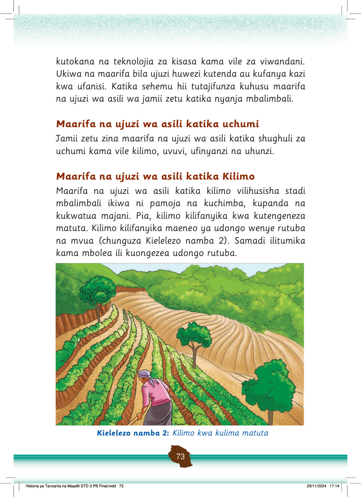

kutokana na teknolojia za kisasa kama vile za viwandani.
Ukiwa na maarifa bila ujuzi huwezi kutenda au kufanya kazi kwa ufanisi.
Katika sehemu hii tutajifunza kuhusu maarifa na ujuzi wa asili wa jamii zetu katika nyanja mbalimbali.
Maarifa na ujuzi wa asili katika uchumi
Jamii zetu zina maarifa na ujuzi wa asili katika shughuli za uchumi kama vile kilimo, uvuvi, ufinyanzi na uhunzi.
Maarifa na ujuzi wa asili katika Kilimo
Maarifa na ujuzi wa asili katika kilimo vilihusisha stadi mbalimbali ikiwa ni pamoja na kuchimba, kupanda na kukwatua majani.
Pia, kilimo kilifanyika kwa kutengeneza matuta.
Kilimo kilifanyika maeneo ya udongo wenye rutuba na mvua (chunguza Kielelezo namba 2).
Samadi ilitumika kama mbolea ili kuongezea udongo rutuba.
Mkulima analima shamba la matuta kwenye mteremko wa kilima. Mistari ya mazao na matuta inaonekana kusaidia kuhifadhi udongo na maji.
Kielelezo namba 2: Kilimo kwa kulima matuta